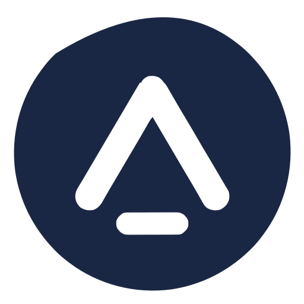

🌐
Onlineverktyg
Gratis
Konvertera bilder direkt i din webbläsare. Ingen installation, inget konto.
Öppna verktygetKonvertera vilken bild som helst till skalbar vektorgrafik på några sekunder - ingen registrering, inga gränser, fullt färgstöd.
Ladda upp en bild för att komma igång
Nedan, en riktig konvertering gjord med konverteraren på denna sida. Denna lilla logotyp på 128px, förstorad: PNG-filen löses upp i fyrkantiga pixlar medan den spårade SVG:n förblir perfekt skarp.
En PNG lagrar en bild som ett fast rutnät av pixlar, så den ser bara rätt ut i den storlek den exporterades för: förstora en logotyp och kanterna blir suddiga, visa den på en högupplöst skärm och du måste skicka med två eller tre tyngre versioner av samma fil. En SVG beskriver dessa former med kurvor och koordinater istället, så webbläsaren ritar om dem skarpt i varje storlek från en enda liten fil. Jämförelsen ovan visar resultatet på en riktig logotyp. I praktiken: konvertera logotyper, ikoner, linjekonst och platta illustrationer till SVG, och behåll fotografier, skärmdumpar och texturer i PNG, WebP eller JPG, där pixelformat faktiskt komprimeras bättre.
Samma skillnad, sammanfattad sida vid sida:
| Aspekt | PNG (raster) | SVG (vektor) |
|---|---|---|
| Skalning | Blir suddig så fort bilden förstoras | Skarp i alla storlekar, från 16px till 4K |
| Filstorlek (logotyp) | 40 till 80 KB, och den dubbleras vid @2x | 2 till 12 KB, en enda fil för varje skärm |
| Högupplösta skärmar | Kräver separata @1x, @2x och @3x exporter | En oförändrad fil |
| Redigering | Tillplattade pixlar: alla ändringar kräver källfilen | Varje form är en redigerbar bana |
| Bäst för | Foton, skärmdumpar, komplexa bilder | Logotyper, ikoner, platta illustrationer |

Alla tre SVG:erna är verkliga konverteringar av denna 512px PNG, producerade av förinställningarna i denna konverterare. Oavsett skärm - 16px favicon eller 4K-skärm - förblir samma fil skarp.
PixelToPath är en gratis online bildvektoriserare: den konverterar vilken PNG, JPG, BMP eller WebP-fil som helst till en ren, skalbar SVG. Tekniken kallas raster-till-vektor-konvertering eller bildspårning: istället för att lagra ett färgvärde per pixel, bygger motorn om din bild som matematiska kurvor som webbläsaren ritar om perfekt i vilken storlek som helst, från en 16px favicon till en 4K-skärm. En bitmapp blir suddig varje gång den förstoras; en vektorfil gör det aldrig. Ladda upp en bild, se live-förhandsgranskningen uppdateras medan du finjusterar inställningarna, och ladda sedan ner en SVG redo för Illustrator, Inkscape och Figma, för inbäddning på en webbplats, eller för en laserskärare eller vinylplotter.
Två spårningslägen är tillgängliga: fullfärg för illustrationer och fotografier, och svartvitt för logotyper och ikoner - med varje parameter justerbar för ett renare resultat.
Ingen installation, inget konto. Ladda upp, förhandsgranska, ladda ner - på under 10 sekunder.
Dra och släpp eller klicka för att ladda upp en PNG, JPG, BMP eller WebP-bild. Att klistra in från urklipp fungerar också.
SVG-filen uppdateras automatiskt när du ändrar inställningar. Du behöver inte klicka på en konvertera-knapp - allt sker direkt.
Klicka på Ladda ner SVG för att få din vektorfil. Öppna den i Illustrator, Inkscape, Figma eller valfri modern webbläsare.
PixelToPath erbjuder tre optimerade förinställningar beroende på din bilds karaktär. Du kan också finjustera varje parameter manuellt.
Konverterar bilden till gråskala innan spårning. Producerar rena, enfärgade banor. Bäst för:
Spårar bilden som flera färglager staplade på varandra med hög färgprecision. Bäst för:
Använder bredare färggruppering och brusfiltrering för att hantera komplexiteten i riktiga fotografier. Bäst för:
SVG-filer som produceras av PixelToPath är helt standardiserade och fungerar överallt. Här är de vanligaste användningsområdena.
Importera SVG:n direkt i ditt designverktyg. Varje form är en fullt redigerbar bana - ändra färger, ändra storlek och modifiera kurvor utan någon kvalitetsförlust.
SVG-filer är upplösningsoberoende och laddas snabbare än PNG för ikoner och logotyper. Bädda in dem inbyggda, använd dem som <img>-taggar eller stilisera dem med CSS.
Skicka din SVG till ett tryckeri och få ett perfekt resultat i vilken storlek som helst - från ett visitkort till en anslagstavla. Inga fler suddiga eller pixliga utskrifter.
Skärmaskiner kräver vektorbanor. Konvertera din PNG-design till SVG och importera den direkt till LightBurn, Cricut Design Space eller RDWorks.
Konvertera en PNG-ikonuppsättning till SVG en gång, och skala den sedan från 16px till 512px utan att röra Photoshop. Fungerar perfekt med React, Vue och alla komponentbibliotek.
SVG-element kan animeras med CSS-övergångar och JavaScript. Konvertera din statiska PNG till SVG och ge den liv med rörelse på din webbplats.
Ja, helt gratis. Ingen registrering, inga vattenstämplar, inga dagliga konverteringsgränser. PixelToPath är ett öppen källkodsprojekt (MIT-licens). Du kan konvertera hur många filer du vill.
Ja. Till skillnad från de flesta gratis onlineverktyg som bara producerar svartvita SVG:er använder PixelToPath VTracer - en modern vektoriseringsmotor som naturligt hanterar fullfärgsbilder. Välj förinställningen Affisch eller Foto för färgutmatning.
Nej. Dina filer skickas till vår server för bearbetning och raderas omedelbart efter att SVG:n har returnerats. Vi lagrar, loggar eller delar inga uppladdade bilder.
PNG, JPG, JPEG, BMP och WebP accepteras alla. Du kan också klistra in en bild direkt från ditt urklipp (Ctrl+V / Cmd+V).
Onlinekonverteraren accepterar filer upp till 20 MB. För större filer eller satsvis bearbetning, ladda ner skrivbordsapplikationen - den har inga storleks- eller kvantitetsgränser och fungerar helt offline.
I binärt läge konverteras bilden först till gråskala med perceptuella vikter (samma som mänsklig syn). Om det spårade resultatet fortfarande är för ljust, aktivera strömbrytaren Invertera i avancerade inställningar - detta är särskilt användbart för logotyper eller ikoner med vit bakgrund.
Spline ger jämna Bézierkurvor - bästa kvalitet för organiska former. Polygon använder raka linjesegment - perfekt för geometriska konstverk med skarpa vinklar. Pixel spårar den exakta pixelgränsen utan någon utjämning - perfekt för pixelkonst eller retrospelsprites.
Ja. SVG-filerna du genererar är dina att använda fritt för alla syften, inklusive kommersiella projekt. Det finns inga licensbegränsningar på utdatafilerna.
Samma kraftfulla motor - välj det format som passar ditt arbetsflöde.
Gratis
Konvertera bilder direkt i din webbläsare. Ingen installation, inget konto.
Öppna verktygetGratis & öppen källkod
Den fullständiga konverteraren på din maskin, för Windows & Linux.
Ladda ner gratis39 € engångskostnad
Bevakad mapp, masskonvertering och CLI för tunga arbetsbelastningar.
Skaffa ProGratis nivå + kreditpaket
Ett REST-anrop: skicka en bild, få en ren SVG. 10 gratis/månad.
Skaffa en API-nyckelJämför alla versioner & priser →
Har du redan ett konto? Logga in på kundportalen →
Skrivbordsversionen av PixelToPath körs helt på din dator - inget internet krävs, inga filstorleksgränser, samma kraftfulla VTracer-motor.
PixelToPath är gratis att använda. Om detta verktyg hjälpte dig att spara tid, överväg att bjuda mig på en kaffe.
❤️ Donera på Ko-fi